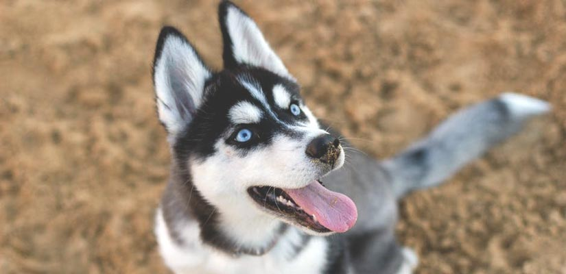
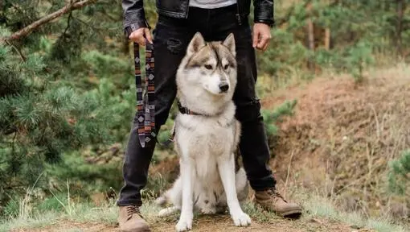
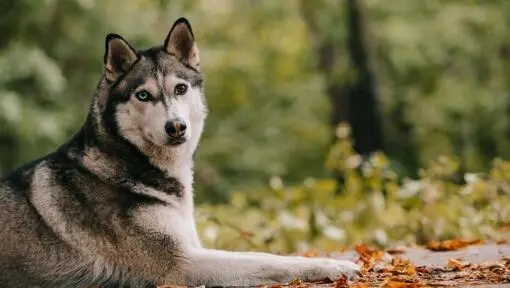

ไซบีเรียน ฮัสกี (Siberian Husky)
สุนัขไซบีเรียน ฮัสกี (Siberian Husky) เป็นหนึ่งในสายพันธุ์สุนัขที่มีความสง่างาม ด้วยรูปลักษณ์ภายนอกและบุคลิกที่ดูนิ่ง แต่ก็กระฉับกระเฉง และมีพลังที่ล้นเหลือ และด้วยคุณสมบัติเหล่านี้ บ่อยครั้งจึงเลี่ยงไม่ได้ที่สุนัขพันธุ์นี้จะมีความผิดปกติในเรื่องข้อต่อ เช่น ข้อสะโพกเคลื่อน และปัญหาโรคผิวหนังตามมา บทความนี้จะพามาทำความรู้จักกับสุนัขพันธุ์ไซบีเรียน ฮัสกีในทุกแง่มุม ทั้งภาพรวมของสายพันธุ์ ปัญหาและเคล็ดลับในการดูแลสุขภาพ และกิจกรรมที่เหมาะสม
The need-to-know

- สุนัขเหมาะสำหรับเจ้าของที่มีประสบการณ์เลี้ยงสุนัข
- ต้องฝึกมากกว่าปกติ
- ชอบเดินออกกำลังกายอย่างหนัก
- ชอบเดินวันละ 1-2 ชั่วโมง
- สุนัขขนาดกลาง
- น้ำลายไหลให้น้อยที่สุด
- ต้องดูแล/ตัดขนสุนัขทุกวัน
- สายพันธุ์ที่ไม่ก่อให้เกิดอาการแพ้
- สุนัขช่างพูดและช่างเห่า
- สุนัขเฝ้าบ้าน ต้องเห่าและเตือน
- อาจต้องฝึกให้อยู่ร่วมกับสัตว์เลี้ยงตัวอื่น
- อาจต้องฝึกให้อยู่ร่วมกับเด็ก
ข้อมูลสำคัญ
อายุเฉลี่ย:12–15 ปี
น้ำหนัก: 16–27 กิโลกรัม
ส่วนสูง: 51–60 เซนติเมตร
สีขน: Black and white, grey, white, black, black and tan, silver, sable and white, grey and white, red and white
ขนาดตัว:ขนาดกลาง
ชื่อกลุ่มคนเลี้ยงสุนัข: สำหรับทำงาน
คะแนนรวม
ความเป็นมิตรกับครอบครัว: 5/5
การออกกำลังกาย: 5/5
ความยากง่ายในการฝึก: 2/5
สามารถอยู่ตามลำพังได้: 1/5
ความเข้ากันได้กับสัตว์อื่น: 5/5
ระดับพลังงาน: 5/5
การดูแลขน: 3/5
การผลัดขน: 4/5